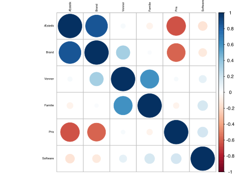
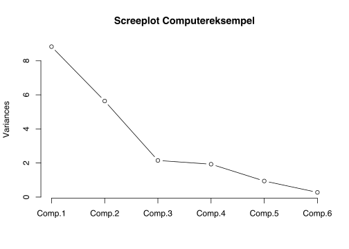
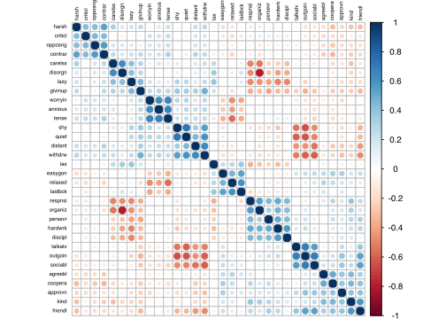
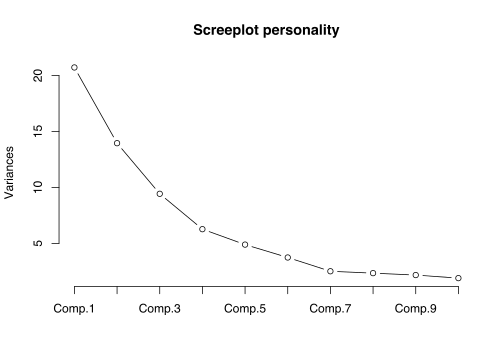

Kapitel 20 Faktoranalyse Premium
Faktoranalyse FA er ligesom, klyngeanalyse vi ser på senere, en strukturanalyse, der belyser hvilke sammenhænge der er i et datasæt. FA er en statistikmodel der navnlig bruges til at forenkle tolkningen af et datamateriale, der indeholder en stor mængde variable. FA bygger på et kæmpe antal udregninger med udgangspunkt i korrelationskoefficienter og er i praksis nærmest umulig at gennemføre uden brug af computersoftware. Før computerens opfindelse kunne en faktoranalyse nemt lægge beslag på en halv snes statistikere på fuld tid gennem flere måneder. Resultatet ville være identifikation få faktorer, skjult i et datamateriale.
Faktoranalysen kan fx. hjælpe med at vise sammenhænge mellem svar i spørgeskemaer, hvilket kan være en hjælp markedsføringsmæssigt, til at forstå hvilke svar samvarierer. En sådan gruppering af spørgsmål kan hjælpe med bedre at forstå kundernes ønsker og behov. Faktoranalyse FA er et godt værktøj til at forstå, hvad dine spørgeskemadata betyder, især når du har mange variable. Faktoranalysen forsøger at finde skjulte variable, som forklarer opførslen af dine observerede variable. FA har historiske rødder i psykometri, dvs målingen af mentale egenskaber.
I modsætning hertil søger man med Klyngeanalysen at finde sammenhænge mellem respondenterne/observationerne og altså ikke variablene, hvilket er et godt hjælpeværktøj i forbindelse med markedssegmentering.
Der findes 2 typer af FA Exploratory Factor Analysis (EFA) og Confirmatory Factor Analysis (CFA). EFA betyder, at du ikke rigtig ved, hvilke skjulte variable (eller faktorer) der findes, og hvor mange de er, så du forsøger at finde dem. CFA betyder, at du allerede har nogle gæt eller modeller på skjulte variable (eller faktorer), og vi vil kontrollere, om dette er korrekt. Vi benytter i det følgende EFA
20.1 Hvilke faktorer er vigtige når man køber en ny computer: Premium
Lad os sige, man har indsamlet et spørgeskema for at undersøge, hvad der er vigtigt, når en forbruger bestemmer, hvilken computer der skal købes. Spørgeskemaet er udformet, som hvor vigtig er Pris for computerkøbet, vægt fra 1 til 7 hvor 7 er højest/vigtigst.
Dette datasæt er lille i forhold til, hvad der er realistisk, da vi blot forsøger at illustrere analysen. Normalt vil man have flere end 6 variable. For at sikre solide analyseresultater, vil man ligeledes have flere respondenter/observationer.
I noterne er input til R og output fra R, markeret i grå rammer. Output dvs. resultaterne R leverer er markeret med ## i hver linje. Input dvs. de kommandoer vi skal skrive ind i R er ikke markeret.
Rammen herunder er input til R, da linjerne ikke er markeret. Læs datasættet ind i R, dette kan du gøre ved at copy paste nedenstående kode, i den grå ramme, direkte ind i R enten i console eller et script.
Bemærk data.frame er en to-dimensionel data struktur, nedenstående betyder vore 6 variable nu er lagret i en dataframe.
Pris <- c(6,7,6,5,7,6,5,6,3,1,2,5,2,3,1,2)
Software <- c(5,3,4,7,7,4,7,5,5,3,6,7,4,5,6,3)
Æstetik <- c(3,2,4,1,5,2,2,4,6,7,6,7,5,6,5,7)
Brand <- c(4,2,5,3,5,3,1,4,7,5,7,6,6,5,5,7)
Venner <- c(7,2,5,6,2,4,1,7,3,2,6,7,6,2,4,5)
Familie <- c(6,3,4,7,1,5,4,5,4,4,5,7,2,3,5,6)
data <- data.frame(Pris, Software, Æstetik, Brand, Venner, Familie)20.2 Forudsætninger for faktoranalysen Premium
Nu skal vi undersøge om det er fornuftigt at foretage en faktoranalyse, dette kan vi undersøge ved enten Bartletts korrelationstest eller Kaiser-Meyer-Olkin KMO.
For at teste dette skal man installere og loade pakken psych, vi skal kun installere første gang. Bemærk install.packages(“psych”) er kommenteret ud nedenfor (kommenteret ud betyder der er sat # foran kommandoen så denne linje ikke afvikles), så første gang skal du fjerne # foran install.packages(“psych”) for at installere denne pakken psych.
Du kan alternativt benytte pacman pakken, hvilket ofte er at foretrække. Hvis du indlæser nedenstående installeres og loades pakken psych:
Nu hvor psych pakken er indlæst kan vi køre Bartletts test i R:
## $chisq
## [1] 36.15696
##
## $p.value
## [1] 0.00167791
##
## $df
## [1] 15Nulhypotesen i Bartletts test er at variablene ikke er korrelerede dvs. alle korrelationskoefficienter \(\rho=0\),
\[H_0:Alle\ \rho=0\] \[H_1:Ikke\ alle\ \rho=0 \]
Forkaster vi , er der basis for at gennemføre faktoranalysen. Den lille på 0.00167791, betyder vi gennemfører faktoranalysen.
Vi kan ligeledes køre Kaiser-Meyer-Olkin KMO testet fra pshych pakken:
## Kaiser-Meyer-Olkin factor adequacy
## Call: KMO(r = data)
## Overall MSA = 0.49
## MSA for each item =
## Pris Software Æstetik Brand Venner Familie
## 0.71 0.70 0.57 0.49 0.30 0.37For KMO skal Overall MSA = 0.49, fortæller om egnethed af data til faktoranalyse. Skal være større end kritisk grænse på ca. 0.5, dette er ikke helt tilfældet her, men vi gennemfører alligevel faktoranalysen.
Vi kan se af korrelationsmatricen, at nogle variable er korrellerede og andre tilsyneladende ikke.
## Pris Software Æstetik Brand Venner Familie
## Pris 1.00000000 0.1856123 -0.63202219 -0.58026680 0.03082006 -0.06183118
## Software 0.18561230 1.0000000 -0.14621516 -0.11858645 0.10096774 0.17657236
## Æstetik -0.63202219 -0.1462152 1.00000000 0.85285436 0.03989799 -0.06977360
## Brand -0.58026680 -0.1185864 0.85285436 1.00000000 0.33316719 0.02662389
## Venner 0.03082006 0.1009677 0.03989799 0.33316719 1.00000000 0.60727189
## Familie -0.06183118 0.1765724 -0.06977360 0.02662389 0.60727189 1.00000000Så det ser ud til, at Pris har stærke negative sammenhænge med Æstetik og Brand. Venner har en stærk positiv sammenhæng med Familie.
Det betyder, at vi kan forvente, at vi vil have to fælles faktorer, og en vil være relateret til pris, æstetik og brand, og den anden vil være relateret til ven og familie. Vi kan lave et corrplot, der grafisk illustrerer disse sammenhænge, store blå prikker er positiv , store røde negativ . Så vi skal installere corplott pakken, her bruger vi pacman til installationen.

20.3 Selve Faktoranalysen Premium
Vi er nu klar til at teste om der er grundlag for at sammenlægge variable til faktorer. Dette tester vi i selve faktor analysen, ved hjælp af funktionen factanal.
Hvis vi samler alle spørgsmål til en samlet faktor, har vi følgende faktor analyse:
##
## Call:
## factanal(x = data, factors = 1)
##
## Uniquenesses:
## Pris Software Æstetik Brand Venner Familie
## 0.567 0.977 0.126 0.167 0.974 1.000
##
## Loadings:
## Factor1
## Pris -0.658
## Software -0.152
## Æstetik 0.935
## Brand 0.912
## Venner 0.161
## Familie
##
## Factor1
## SS loadings 2.190
## Proportion Var 0.365
##
## Test of the hypothesis that 1 factor is sufficient.
## The chi square statistic is 12.79 on 9 degrees of freedom.
## The p-value is 0.172Uniqueness angiver hvor meget af variationen i en variabel, der ikke er associeret med faktoren. Jo lavere Uniqueness, des større sammenhæng til faktorerne.
Loadings angiver hvordan hver variabel er vægtet for faktorerne, men også hvor stærk er til hver faktor. Faktor 1 påvirkes således mest af Æstetik, Brand og Pris. Denne faktor kan ses af corrplottet hvor disse tre variable ses at påvirke hinanden, Pris er negativt med Æstetik og Brand.
Proportion Var er et vigtigt nøgletal, der angiver andelen af variationen i data, der er forklaret af den pågældende faktor. Her forklares alså kun 36.5% af variationen i datasættet. Proportion Var findes som SS loadings divideret med antallet af variable dvs. her 6.
Lad os se på hvad der sker, hvis vi deler variablene op i 2 faktorer:
##
## Call:
## factanal(x = data, factors = 2)
##
## Uniquenesses:
## Pris Software Æstetik Brand Venner Familie
## 0.559 0.960 0.126 0.080 0.005 0.609
##
## Loadings:
## Factor1 Factor2
## Pris -0.657
## Software -0.161 0.119
## Æstetik 0.933
## Brand 0.928 0.242
## Venner 0.100 0.992
## Familie 0.620
##
## Factor1 Factor2
## SS loadings 2.207 1.453
## Proportion Var 0.368 0.242
## Cumulative Var 0.368 0.610
##
## Test of the hypothesis that 2 factors are sufficient.
## The chi square statistic is 2.16 on 4 degrees of freedom.
## The p-value is 0.706Cumulative Var 0.61 er summen af proportion var 0.368 og 0.242, og betyder at faktor 1 og faktor 2 forklarer 61% af variationen i datamaterialet.
Faktor 2 forklares altså primært af Venner og Familie, dette stemmer godt overens med billedet vi så i corrplot.
Nu opdeler vi variablene i 3 faktorer.
##
## Call:
## factanal(x = data, factors = 3)
##
## Uniquenesses:
## Pris Software Æstetik Brand Venner Familie
## 0.468 0.944 0.154 0.005 0.193 0.005
##
## Loadings:
## Factor1 Factor2 Factor3
## Pris -0.717 0.122
## Software -0.146 0.172
## Æstetik 0.908 -0.130
## Brand 0.892 -0.116 0.430
## Venner 0.440 0.781
## Familie 0.970 0.228
##
## Factor1 Factor2 Factor3
## SS loadings 2.161 1.198 0.872
## Proportion Var 0.360 0.200 0.145
## Cumulative Var 0.360 0.560 0.705
##
## The degrees of freedom for the model is 0 and the fit was 0.0188Nu forklares 70.5% af variationen i datamaterialet altså ud fra de 3 faktorer.
20.4 Hvor mange faktorer bør benyttes? Premium
Der er ingen fast regel for hvor mange faktorer der bør benyttes. Der er flere forskelle metoder til bestemmelse af antallet af faktorer, vi viser herunder 2 metoder.
20.4.1 Eigenvalues metoden Premium
Eigenvalues udtrykker hvor meget af datamaterialets samlede varians, der dækkes af den pågældende faktor. Eigenvalues er standardiserede således at summen giver antallet af variable, herunder ses at summen er 6, da der er 6 variable i datasættet. Vi ser hvor stor en del af variationen hver faktor forklarer, når der er 6 faktorer. Faktor 5 og faktor 6 bibringer meget lidt yderligere forklaring af variationen.
## [1] 2.45701130 1.68900056 0.89157047 0.60583326 0.27285334 0.08373107## [1] 6## [1] 0.40950188 0.28150009 0.14859508 0.10097221 0.04547556 0.01395518Når vi benytter Eigenvalues metoden, bestemmes antallet af faktorer ud fra antallet af Eigenvalues større end 1, det er denne metode fx. SPSS benytter. Vi ser at kun 2 Eigenvalues er 2.45701130 og 1.68900056 er større end 1, vi får således kun 2 faktorer. Eigenvalues metoden er ofte lidt konservativ, således at vi får færre faktorer end med de øvrige metoder.
20.4.2 Eigenvalues metoden Premium
Vi kan se på nedenstående screeplot, der hvor kurven flader ud, bibringer yderligere faktorer ikke synderlig megen yderligere forklaring til modellen. Man vil med screeplot kriteriet, vælge antallet af faktorer hvor kurven knækkker i tilfældet med 3 faktorer. Man vil ikke altid entydigt kunne afgøre hvor screeplot kurven knækker, her må man så afgøre dette bedst muligt.

Spørgsmål personality Stanford
Hent nu filen personality, hvor 240 Stanford studerende har svaret på i hvor høj grad de mener at besidde 32 forskellige personlighedstræk. 1 til 8 hvor 1 er mindst og 8 er mest. Foretag hvis en test viser dette er fordelagtigt en faktoranalyse.
Download personality fra filen her og importer den i R via File - Import Dataset.
Svar personality Stanford
## R was not square, finding R from data## $chisq
## [1] 4009.545
##
## $p.value
## [1] 0
##
## $df
## [1] 496## Kaiser-Meyer-Olkin factor adequacy
## Call: KMO(r = personality)
## Overall MSA = 0.84
## MSA for each item =
## distant talkatv carelss hardwrk anxious agreebl tense kind opposng relaxed disorgn outgoin approvn shy discipl harsh persevr friendl worryin respnsi
## 0.88 0.86 0.82 0.87 0.82 0.73 0.84 0.81 0.79 0.86 0.75 0.87 0.89 0.87 0.84 0.85 0.86 0.87 0.81 0.86
## contrar sociabl lazy coopera quiet organiz criticl lax laidbck withdrw givinup easygon
## 0.83 0.90 0.89 0.83 0.87 0.78 0.87 0.81 0.73 0.90 0.89 0.78Vi gennemfører klart analysen viser begge tests.
#cor(personality) korrelationsmatricen er udeladt af pladshensyn.
corrplot(cor(personality), order = "hclust", tl.col='black', tl.cex=.5)

## [1] 7.2407068 4.5250901 3.1240573 2.3335890 1.8783611 1.1940636 0.9268636 0.8553802 0.7968460 0.7128793 0.6936229 0.6396893 0.6277046 0.5399600 0.5074253
## [16] 0.4719721 0.4639916 0.4455816 0.4376430 0.4135706 0.3906941 0.3696839 0.3273829 0.3014077 0.2940833 0.2800131 0.2522101 0.2349649 0.2199461 0.2011492
## [31] 0.1658493 0.1336176Vi benytter her 7 faktorer:
##
## Call:
## factanal(x = personality, factors = 7)
##
## Uniquenesses:
## distant talkatv carelss hardwrk anxious agreebl tense kind opposng relaxed disorgn outgoin approvn shy discipl harsh persevr friendl worryin respnsi
## 0.529 0.377 0.491 0.416 0.347 0.576 0.273 0.416 0.512 0.390 0.181 0.251 0.640 0.387 0.478 0.517 0.560 0.377 0.388 0.411
## contrar sociabl lazy coopera quiet organiz criticl lax laidbck withdrw givinup easygon
## 0.392 0.367 0.421 0.528 0.284 0.229 0.562 0.663 0.248 0.362 0.557 0.549
##
## Loadings:
## Factor1 Factor2 Factor3 Factor4 Factor5 Factor6 Factor7
## distant 0.586 0.121 -0.172 0.246 0.137
## talkatv -0.760 0.144 0.105
## carelss -0.280 0.137 -0.134 0.192 0.586 0.111
## hardwrk -0.182 0.700 0.141 -0.187
## anxious 0.153 0.774 0.136
## agreebl 0.577 -0.194 0.212
## tense 0.150 0.787 0.208 -0.179
## kind -0.102 0.188 0.699 -0.118 -0.189
## opposng -0.115 0.672
## relaxed -0.104 -0.526 0.263 0.491
## disorgn -0.340 0.830
## outgoin -0.834 0.107 0.166 0.113
## approvn -0.284 0.137 0.438 -0.142 0.214
## shy 0.724 -0.240 0.153
## discipl 0.698 -0.164
## harsh -0.265 0.619 0.132
## persevr -0.134 0.598 0.216
## friendl -0.504 0.129 0.571 -0.131
## worryin 0.163 0.722 0.119 -0.216
## respnsi 0.578 0.331 -0.343 -0.152
## contrar 0.159 -0.162 0.730 0.120
## sociabl -0.733 0.263
## lazy 0.167 -0.664 0.152 0.163 0.208 0.130
## coopera 0.136 -0.123 0.603 -0.248
## quiet 0.789 -0.157 0.191 0.173
## organiz 0.433 -0.753
## criticl 0.112 0.124 0.614 -0.122
## lax -0.355 0.102 0.227 0.377
## laidbck -0.102 -0.288 0.109 0.801
## withdrw 0.720 0.172 -0.150 0.224 0.105
## givinup 0.337 -0.438 0.280 -0.165 0.136 0.115
## easygon -0.159 -0.116 -0.245 0.302 0.508
##
## Factor1 Factor2 Factor3 Factor4 Factor5 Factor6 Factor7
## SS loadings 4.501 3.076 2.494 2.403 2.221 2.068 1.560
## Proportion Var 0.141 0.096 0.078 0.075 0.069 0.065 0.049
## Cumulative Var 0.141 0.237 0.315 0.390 0.459 0.524 0.573
##
## Test of the hypothesis that 7 factors are sufficient.
## The chi square statistic is 460.58 on 293 degrees of freedom.
## The p-value is 0.00000000137Vi benytter her 8 faktorer:
##
## Call:
## factanal(x = personality, factors = 8)
##
## Uniquenesses:
## distant talkatv carelss hardwrk anxious agreebl tense kind opposng relaxed disorgn outgoin approvn shy discipl harsh persevr friendl worryin respnsi
## 0.534 0.375 0.484 0.425 0.342 0.204 0.263 0.439 0.533 0.417 0.170 0.257 0.649 0.364 0.490 0.468 0.497 0.333 0.347 0.420
## contrar sociabl lazy coopera quiet organiz criticl lax laidbck withdrw givinup easygon
## 0.391 0.365 0.420 0.502 0.276 0.236 0.565 0.682 0.005 0.367 0.550 0.580
##
## Loadings:
## Factor1 Factor2 Factor3 Factor4 Factor5 Factor6 Factor7 Factor8
## distant 0.587 0.103 -0.118 0.262 0.134
## talkatv -0.761 0.152 0.104
## carelss -0.307 0.115 0.218 0.584 -0.108
## hardwrk -0.182 0.694 0.139 -0.188
## anxious 0.149 0.772 0.144
## agreebl 0.795 -0.173 0.140 -0.327
## tense 0.150 0.796 0.211 -0.152
## kind -0.118 0.227 0.615 -0.151 -0.182 0.238
## opposng 0.102 -0.116 0.654
## relaxed -0.108 -0.535 0.276 0.441
## disorgn -0.336 0.836
## outgoin -0.836 0.107 0.147
## approvn -0.294 0.129 0.445 -0.135 0.163
## shy 0.729 -0.224 0.161 0.153
## discipl 0.677 -0.168 -0.105
## harsh -0.178 0.658 0.124 -0.195
## persevr -0.133 0.644 0.127 0.206
## friendl -0.517 0.170 0.471 -0.160 0.326
## worryin 0.164 0.744 0.101 -0.170 0.177
## respnsi 0.599 0.285 -0.337 -0.117 0.105
## contrar 0.153 -0.152 0.732 0.118
## sociabl -0.737 0.222 0.104 0.123
## lazy 0.166 -0.665 0.142 0.166 0.208 0.116
## coopera -0.112 0.143 -0.130 0.614 -0.252
## quiet 0.789 -0.147 0.195 0.169 0.109
## organiz 0.434 -0.748
## criticl 0.124 0.132 0.604 -0.119
## lax -0.361 0.107 0.231 0.323
## laidbck -0.277 0.105 0.942
## withdrw 0.721 0.152 -0.111 0.241 0.101
## givinup 0.337 -0.465 0.254 -0.106 0.161 0.108
## easygon -0.169 -0.117 -0.261 0.284 0.467
##
## Factor1 Factor2 Factor3 Factor4 Factor5 Factor6 Factor7 Factor8
## SS loadings 4.549 3.181 2.531 2.325 2.287 2.052 1.583 0.539
## Proportion Var 0.142 0.099 0.079 0.073 0.071 0.064 0.049 0.017
## Cumulative Var 0.142 0.242 0.321 0.393 0.465 0.529 0.578 0.595
##
## Test of the hypothesis that 8 factors are sufficient.
## The chi square statistic is 398.53 on 268 degrees of freedom.
## The p-value is 0.000000379Spørgsmål Mediedata
Download filen om mediedata her. Importer denne i R, husk under importen at vælge det korrekte sheet, der indeholder data.
Datasættet omhandler danskernes medievaner, 324 danskere er blevet spurgt om deres medievaner. Datasættet indeholder følgende 11 variable.
TV-kigning samlet Antal minutter pr. dag.
Radiolytning Samlet Antal minutter pr. dag.
Avislæsning Samlet Antal minutter pr. dag.
TV-kigning Nyheder Antal minutter pr. dag. “Nyheder” omfatter “Nyheder, politik og aktuelt”
Radiolytning Nyheder Antal minutter pr. dag. “Nyheder” omfatter “Nyheder, politik og aktuelt”
Avislæsning Nyheder Antal minutter pr. dag. “Nyheder” omfatter “Nyheder, politik og aktuelt”
Internetforbrug 0 Ingen internetadgang hjemme eller på arbejde 1 Bruger aldrig 2 Mindre end en gang om måneden 3 En gang om måneden 4 Flere gange om måneden 5 En gang om ugen 6 Flere gange om ugen 7 Hver dag
Alder Alder i år
Højest fuldførte uddannelse 1 Folkeskole 6.-8. klasse 2 Folkeskole 9.-10. klasse 3 Gymnasielle uddannelser, studentereksamen, HF, HHX, HTX 4 Kort erhvervsudd. under 1-2 års varighed, F.eks AMU Arbejdsmarkedsudd., Basisår Erhvervsfaglige udd. 5 Faglig udd. (håndværk, handel, landbrug mv.), F.eks. Faglærte, Social- og sundhedsassistent-udd. og tilsvarende 6 Kort videreg. udd af op til 2-3 år, F.eks. Erhv.akademi, datamatiker, tandplejer, byggetekniker, installatør, HD 7 Mellemlang videreg.udd. 3-4 år. Prof.bachelorer, F.eks. Diploming, sygeplejerske, skolelærer, pædagog, journalist, HA 8 Universitetsbachelor. 1. del af kandidatuddannelse 9 Lang videregående uddannelse. Kandidatuddannelser af 5.-6. års varighed, F.eks. Cand.mag., cand.jur., cand.polyt. etc. 10 Forskeruddannelse. Ph.d., doktor
Kvindedummy kodet med kvinde=1, mand=0
Hjemmeboendebørndummy kodet med Ja=1, Nej=0
Gennemfør en faktor analyse på datasættet.
Spørgsmål Genderroles
Download filen genderroles her og importer den i R via File - Import Dataset. Pas på variablene skal konverteres til , hvor det giver mening. Man bør nok udelade variablen Region, ellers skal den ændres til et passende antal .
Gennemfør en faktor analyse på datasættet.